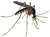

Löf.nu – hem för klanen Löf
Här hittar du klanen Löfs närvaro på webben.
På adressen www.lof.nu
Gysinge egendom
– ny bok om Gysinge egendom.
Per Nirs
– släkthistoria för gården Per Nirs av Bengt Löf.
På andra ställen
Cura
– Joakim Löfs politiska blogg.
Dalälven.com
– turistinformation från Börje och Malin Löf.
Partiet Vändpunkt
– parti som Joakim Löf är engagerad i.
Pontus Vinderos
– Fd Pontus Löf.
UVAT
– Arne Löfs företag.
Letar du efter Patientförsäkringen LÖF?
Deras webbplats finns på adressen
www.lof.se
.